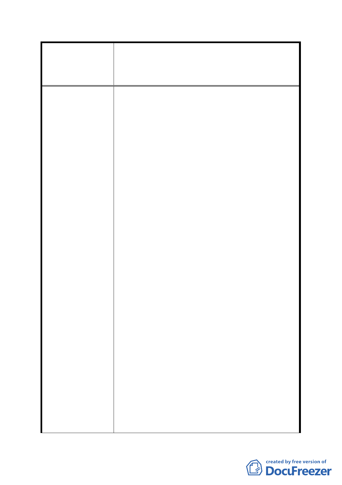

案名
擬定臺北市內湖區蘆洲里附近工業區細部計畫暨變
更第 2 種工業區為科技工業區 B 區(特)、科技工業
區 B 區、道路用地、護坡用地及變更工業區(供輕工
業使用)為科技工業區 A 區(特)計畫案
經查案內時程獎勵規定，係參採本市其他開發時
程獎勵案例（市民大道案），最高給予 10%基準容
積獎勵。另本計畫範圍全區皆劃為更新地區，可
同時適用更新獎勵（更新時程獎勵除外），故有關
參與更新可能獲得之容積獎勵或稅捐減免，本地
區亦可適用。次查本計畫範圍屬重劃區部分，亦
可配合重劃工程領取拆遷補償費用。
2. 另有關案內規範「重劃區範圍土地於重劃完成之
日起 2 年內開發、於重劃完成之日起 3 年內取得
建造執照，否則本時程獎勵予以取消」1 節，經
查該方案於專案小組審議期間，並無其他委員或
人民陳情意見。
3. 前述案內時程獎勵相關規定，業經市都委會第二
次專案小組討論並決議：「有關開發時程獎勵之相
關規定，………劃為更新地區，該二項內容提大
會確認。」
4. 綜上所述，本計畫範圍可獲得之相關容積獎勵項
目、比例及其他補償措施，已與本市其他案例相
符，應尚屬合理，且經都委會專案小組審議，故
不建議再予放寬為 20％。
5. 有關陳情意見擬新增基地開發規模獎勵項目 1
節，經查本市其他同時採「市地重劃」及「都市
更新」方式辦理之案例（如依南港中研院東側住
宅區、南港輪胎 ），並無另訂基地開發規模獎勵
項目，且依更新相關法令，更新基地規模達 3000
平方公尺以上，亦可申請容積獎勵。
6. 另查本市其他訂有開發規模獎勵之案例（如南港
車站特定專用區、基隆河截彎取直地區），其開發
規模需達 4000 平方公尺或全街廓開發，方可獲得
獎勵；且該等案例，皆未適用都市更新獎勵。
7. 綜上所述，本重劃區範圍已可循都市更新相關法
令申請開發規模獎勵，故不建議新增開發規模獎
勵。
- 41 -